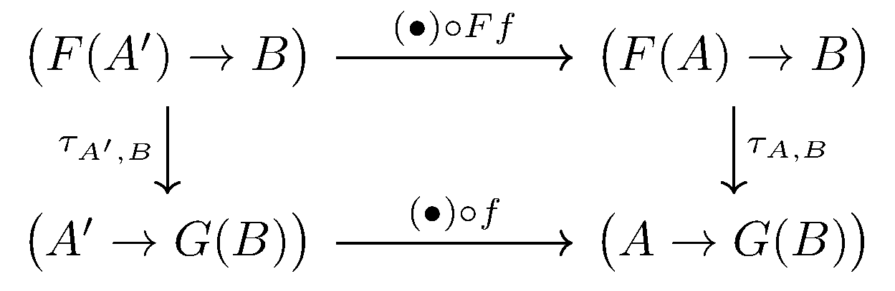
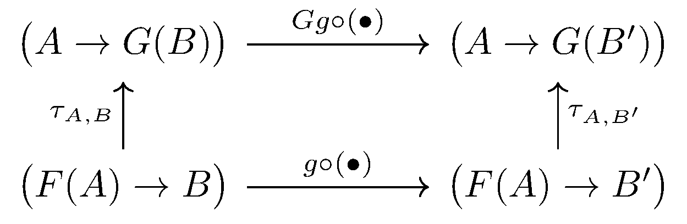
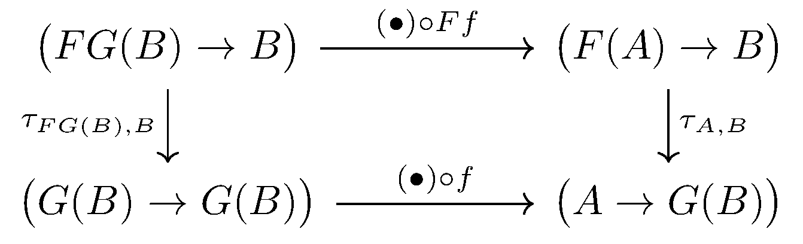
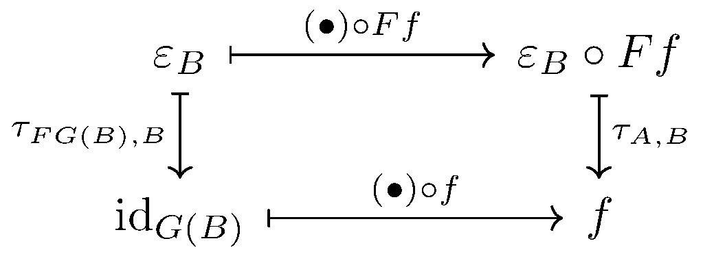
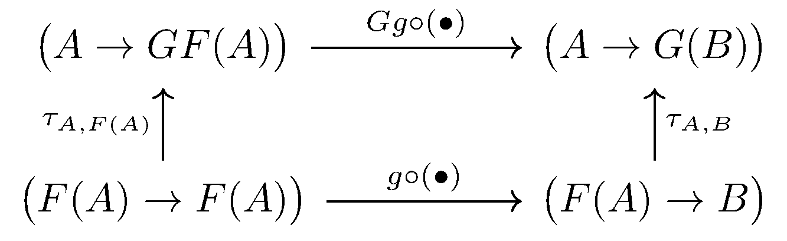
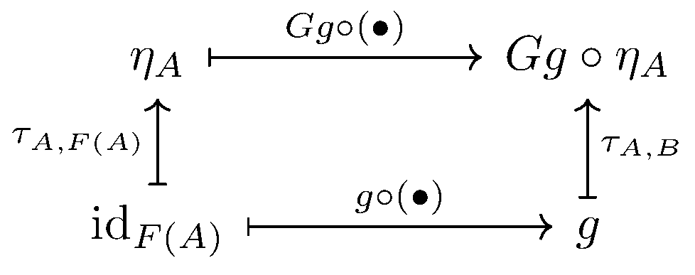

April 18th
Today I learned about adjoints in category theory, from Vakil . We have the following definition.
Definition. Given categories $\mathcal A$ and $\mathcal B$ with functors $F:\mathcal A\to\mathcal B$ and $G:\mathcal B\to\mathcal A,$ then the pair $(F,G)$ is an adjuction if we have the "natural'' bijection \[\tau_{A,B}:\big(F(A)\to B\big)\to\big(A\to G(B)\big)\] for any $A\in\mathcal A$ and $B\in\mathcal B.$ We might say that $F$ is a left adjoint or that $G$ is a right adjoint.
We very quickly say that "bijection'' means that there is another map $\tau_{A,B}^{-1}$ which composes to give the identity.
The word "natural'' in the above definition is something of a weasel word. To be explicit, we need the following diagram to commute for any $f:A\to A'.$

Additionally, for $g:B\to B',$ we also need the following diagram to commute, in order to make $\tau_{A,B}^{-1}$ also natural.

Roughly speaking, $\tau_{A,B}$ is roughly declaring the behavior $F$ and $G$ the same, over their individual categories. Being a bit crass, we can think about $F$ and $G$ as quasi-inverses in the homotopy type theory sense.
For example, while we cannot show that $FG:\mathcal B\to\mathcal B$ is literally the identity, we can exhibit a map $\varepsilon_B:B\to FG(B)$ which behaves a lot like the identity with respect the adjunction.
Lemma. There is a map $\varepsilon_B:B\to FG(B)$ which satisfies, for any $A\in\mathcal A$ and $B\in\mathcal B,$ we have $f:A\to G(B)$ has \[F(A)\stackrel{\tau_{A,B}^{-1}(f)}\longrightarrow B=F(A)\stackrel{Ff}\longrightarrow FG(B)\stackrel{\varepsilon_B}\longrightarrow B.\]
Use the first commutative diagram with $A'=G(B)$ so that we can use $f:A\to G(B).$ This looks like the following.

To use this diagram, we need to inhabit the lower-left corner with some map, but the only map we have access to is $\op{id}_{G(B)}.$ So we pull this back up to $\varepsilon_B:=\tau_{FG(B),B}^{-1}(\op{id}_{G(B)}).$ Now the diagram looks like the following.

It follows that $\tau_{A,B}^{-1}(f)=\varepsilon_B\circ Ff,$ which is what we wanted. $\blacksquare$
We can also construct a mirror $\eta_A$ using the other commutative diagram.
Lemma. There is a map $\eta_A:A\to GF(A)$ which satisfies, for any $A\in\mathcal A$ and $B\in\mathcal B,$ we have $g:F(A)\to B$ has \[A\stackrel{\tau_{A,B}(g)}\longrightarrow G(B)=A\stackrel{\eta_A}\longrightarrow GF(A)\stackrel{Gg}\longrightarrow G(B).\]
Use the second commutative diagram with $B=F(A)$ and $B'=B.$ This looks like the following.

Again, without much to do, we push $\op{id}_{F(A)}$ into the bottom-left to set $\eta_A:=\tau_{A,F(A)}(\op{id}_{F(A)}).$ Following the rest of the diagram through, we have the following.

It follows that $\tau_{A,B}(g)=Gg\circ\eta_A,$ which is what we wanted. $\blacksquare$
In my head, I'm thinking about $\eta_A$ and $\varepsilon_B$ as more or less identity maps in the most natural way with these functors. They entirely determine the adjoint, as shown in the lemmas, and I am under the impression we can actually define the adjoint backwards from the $\eta_A$ and $\varepsilon_B$ maps.